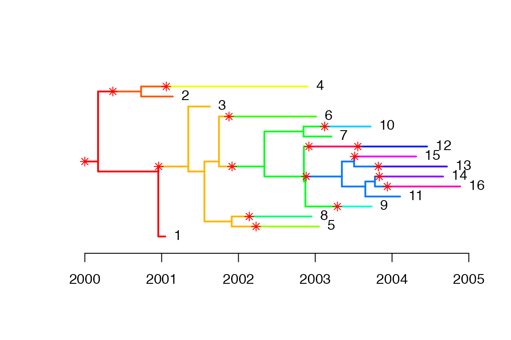
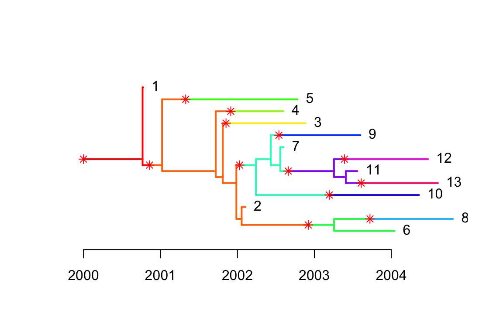
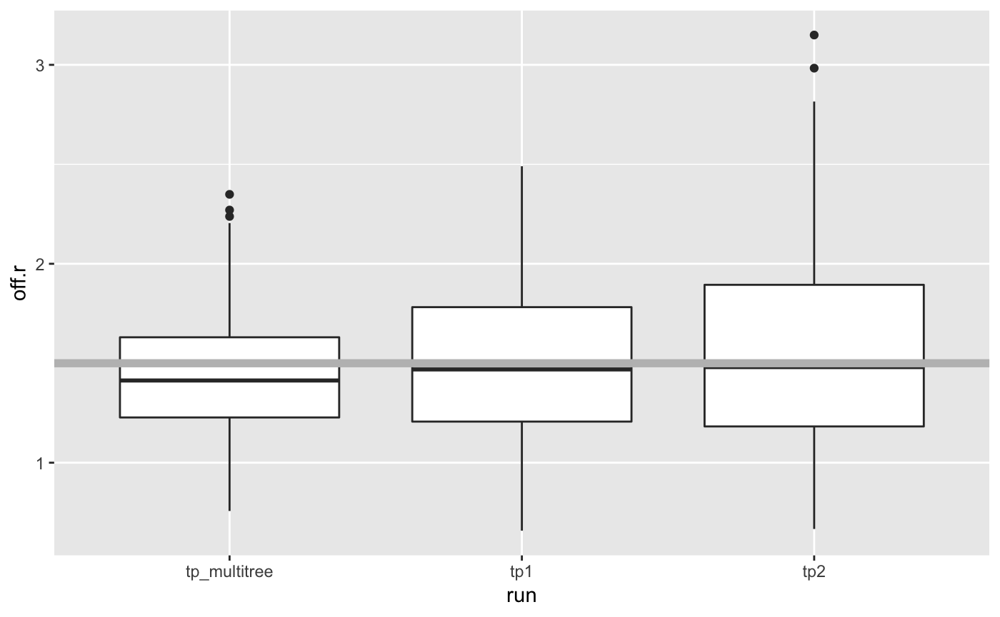
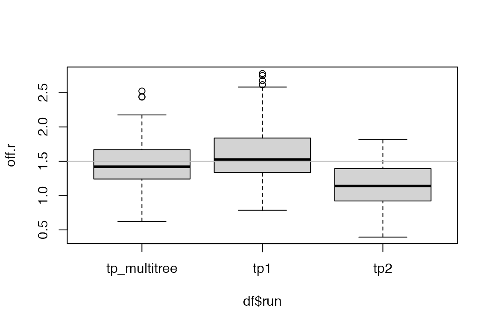
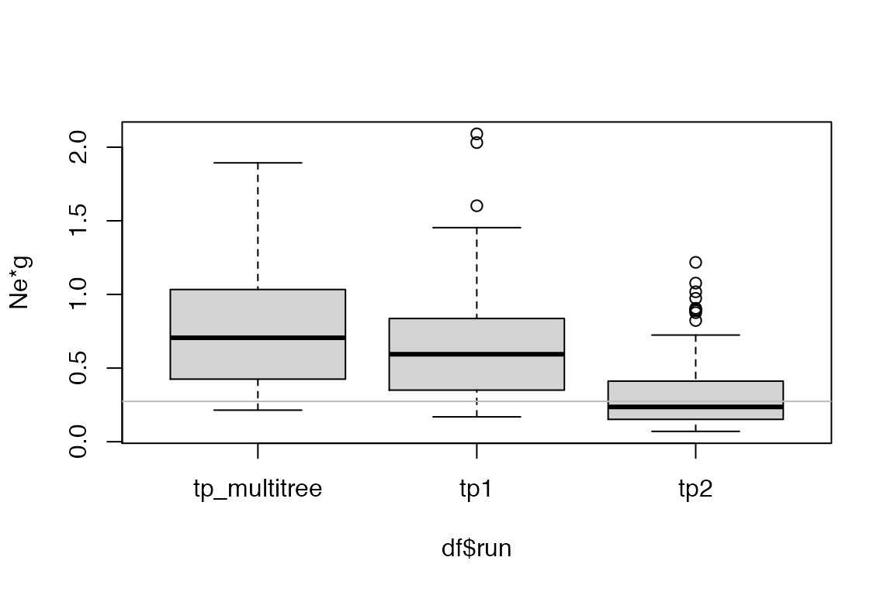

multitree.RmdTransPhylo can draw inference on transmission events from a dated phylogenetic tree. In this tutorial, we demonstrate an extension, infer_multittree_shar_param, that allows simultaneous inference of multiple transmission trees from corresponding phylogenetic trees, with the possibility of sharing any subset of TransPhylo parameters. This may be useful when one is faced with multiple transmission clusters, which may be define genetically through SNP cutoff coupled with epidemiological data, and it may be the case that jointly analyzing these clusters is desirable assuming they share the same underlying epidemiological parameters. It is also computational efficient since fewer number of parameters will be estimated. Another use case might be that sometimes it is difficult to summarise a single representative tree from a collection of phylogenetic trees, such as BEAST trees. In this case, one could run multiple tree inference on a subsample of BEAST trees. This has additional benefit of incorporating some degree of uncertainty from the BEAST posterior.
We simulate two outbreaks with the same set of parameters defined below, using TransPhylo’s outbreak simulator.
neg <- 100/365
off.r <- 1.5
w.shape <- 10
w.scale <- 0.1
ws.shape <- w.shape
ws.scale <- w.scale
pi <- 0.8
set.seed(1234)
simu1 <- simulateOutbreak(neg=neg, off.r=off.r, pi=pi, w.shape=w.shape,
w.scale=w.scale, dateStartOutbreak=2000,dateT=2005)
simu2 <- simulateOutbreak(neg=neg, off.r=off.r, pi=pi, w.shape=w.shape,
w.scale=w.scale, dateStartOutbreak=2000,dateT=2005)We plot the combined phylogenetic and transmission trees, each colour represents an infected host, colour changes when there is a transmission event.
plot(simu1)
plot(simu2)
The corresponding phylogenetic trees can be extracted. We first use single tree routine inferTTree separately for each phylogenetic tree, then use the multiple tree routine infer_multittree_shar_param to jointly infer transmission trees while sharing all parameters. The second parameter of offspring distribution, off.p, has no effect because it is not updated by default, but we still include it in the set of shared parameters.
We compare the posterior estimates of the parameters with those obtained from running inferTTree separately. In the multiple tree routine, we specify the two parameters of beta prior to be both 1, in order to get a uniform prior for the sampling rate that is consistent with inferTTree, where uniform prior is assumed.
ptree1 <- extractPTree(simu1)
ptree2 <- extractPTree(simu2)
iters <- 2e3; thin <- 10
record_tp1 <- inferTTree(ptree1, w.shape, w.scale, ws.shape, ws.scale,
mcmcIterations = iters, thinning = thin, dateT = 2005)
record_tp2 <- inferTTree(ptree2, w.shape, w.scale, ws.shape, ws.scale,
mcmcIterations = iters, thinning = thin, dateT = 2005)
record_tpj <- infer_multittree_share_param(list(ptree1,ptree2), w.shape, w.scale, ws.shape, ws.scale,
mcmcIterations = iters, thinning = thin, dateT = 2005,
share = c("neg", "off.r", "off.p", "pi"))Take the last 50% trees. Note that the multiple tree inference returns list of length two where each element contains the result corresponding to the input phylogenetic tree.
begin <- (iters * 0.5) / thin + 1
end <- iters / thin
record_tp1 <- record_tp1[begin:end]
record_tp2 <- record_tp2[begin:end]
record_tpj[[1]] <- record_tpj[[1]][begin:end]
record_tpj[[2]] <- record_tpj[[2]][begin:end]We visualize the estimates from the three runs. Note that because we have shared the parameters, we can pick either element from the list result record_tpj.
get_param_estimates <- function(record, p){
sapply(record, function(x) x[[p]])
}
df <- data.frame(run = rep(c("tp1","tp2","tp_multitree"), each = length(record_tp1)),
pi = c(get_param_estimates(record_tp1, "pi"),
get_param_estimates(record_tp2, "pi"),
get_param_estimates(record_tpj[[1]], "pi")),
off.r = c(get_param_estimates(record_tp1, "off.r"),
get_param_estimates(record_tp2, "off.r"),
get_param_estimates(record_tpj[[1]], "off.r")),
neg = c(get_param_estimates(record_tp1, "neg"),
get_param_estimates(record_tp2, "neg"),
get_param_estimates(record_tpj[[1]], "neg")))In this example where we explicitly set the parameters when simulating the outbreaks, we see that the posterior estimates from the multiple tree inference generally have lower variance than those resulting from single tree inference. The true parameter values are shown in gray reference line.


